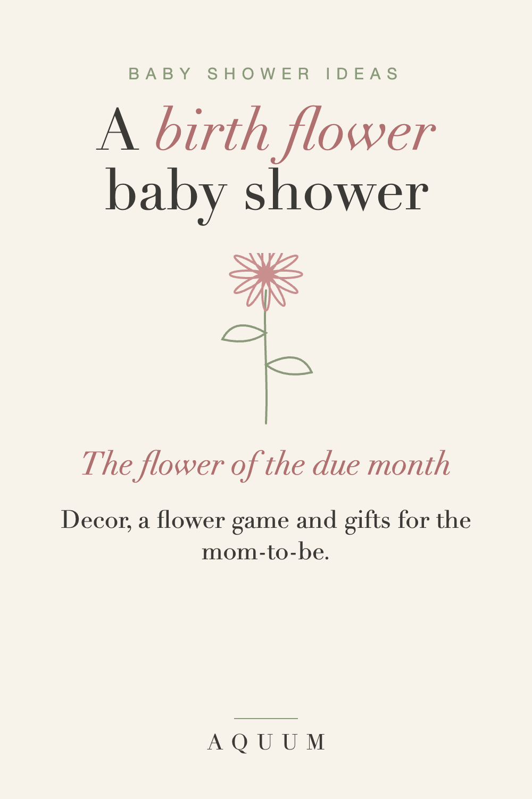

Baby Shower Birth Flower Ideas: Decor, Games and Gifts
2026-09-30
Written by the team behind Aquum, a small birth flower gift shop. How we make money.

A birth flower gives a baby shower an easy theme: the flower of the month the baby is due. It shapes the colors, the decor and the gifts, and it comes with a meaning the parents can keep.
Pick the flower
Use the baby's due month. If the due date is close to the end of a month, pick both flowers and let the parents choose. Every month's flower is in the month-by-month guide.
Decor ideas
- Fresh flowers of the month on every table, or dried ones if they're out of season.
- Colors from the flower: soft yellow for a March daffodil, blush for a June rose, gold for an October marigold.
- A framed print of the flower at the entrance. Our free printable chart works for a table with all twelve.
A birth flower game
Print the chart, cut the twelve flowers apart, and ask guests to match each flower with its meaning. The winner takes home the centerpiece. It's quick, it gets people talking, and nobody has to smell melted chocolate in a diaper.
Gift ideas for the mom-to-be
- Something for her with the baby's flower: a soft shirt or a mug for the early weeks. See our guide to gifts for new moms.
- Seeds or bulbs of the baby's flower to plant together on the first birthday.
- A card with the meaning, signed by everyone at the shower.
For the parents to keep
Ask each guest to write a wish for the baby on a card, and put the baby's flower on the front. It becomes the first keepsake in the baby book.